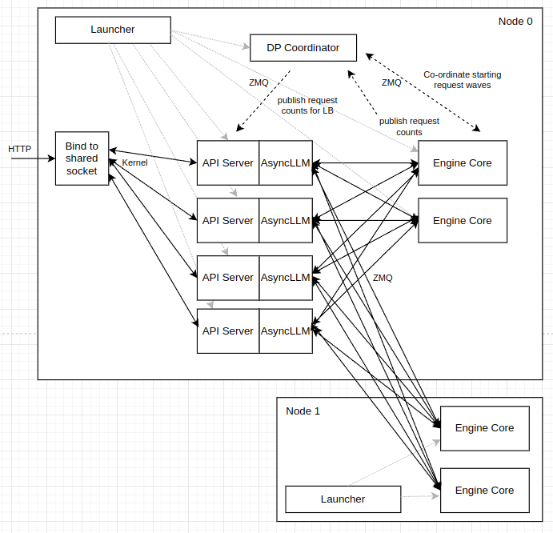

vllm DP (Data Parallel)
By ZhongsJie
- 5 minutes read - 2026 wordsDP基本概念#
DP在推理场景下的核心思想，在多个 GPU/节点上完整复制同一个模型权重，每个副本独立处理不同的请求或批次，从而近似线性提升吞吐。与训练中的 DP 需要梯度聚合不同，推理 DP 没有参数同步，通信负担主要来自调度、路由、指标与可选的缓存协同。
具体来说
- 每个 GPU/设备都拥有模型的完整副本
- 输入数据被分割成多个批次，通过负载均衡分配给不同设备
- 各设备独立进行前向推理
- 每个设备产生各自批次的输出结果
在DP部署方式下由于单卡的计算效率基本保持不变，因此吞吐提升近似是线性：理论上2 张卡就是 2 倍吞吐，4 张卡就是 4 倍，以此类推。
在大规模部署DP的时候，由于整体可支持的吞吐翻倍，API服务器需要面临成倍的压力，因此API服务器（Tokenize等预处理）可能会成为系统瓶颈。vllm可以使用--api-server-count命令行选项来扩展，最终暴露给用户的是一个Endpoint，在内部实现API服务器的扩展。

vllm 项目代码实现#
代码分析基于vllm main branch(735284ed8)
dp-size（数据并行大小）通过parallel_config.data_parallel_size配置，决定了需要启动的 engine-core 数量。
假设：8 张 GPU，DP=2 (2 个数据并行组，每组 4 张卡)
┌─────────────────┐ ┌─────────────────┐
│ DP Group 0 │ │ DP Group 1 │
└─────────────────┘ └─────────────────┘
处理 Batch A 处理 Batch B
1. 主要相关文件#
/vllm/vllm/v1/engine/utils.py：包含启动 engine-core 进程的核心逻辑/vllm/vllm/v1/engine/core_client.py：创建和管理 engine-core 客户端/vllm/vllm/v1/engine/core.py：EngineCore 类的具体实现
2. 启动流程#
2.1 启动函数 launch_core_engines#
在 utils.py 中的 launch_core_engines 函数是启动 engine-core 的主要入口点。当dp_size > 1 时，会启动一个 DPCoordinator 进程来协调各个 engine-core。sglang中通过DataParallelController管理sglang scheduler
def launch_core_engines(
vllm_config: VllmConfig,
executor_class: type[Executor],
log_stats: bool,
num_api_servers: int = 1,
) -> Iterator[
tuple[
CoreEngineProcManager | CoreEngineActorManager | None,
DPCoordinator | None,
EngineZmqAddresses,
]
]:
...
# 设置协调器的ZMQ地址
addresses = EngineZmqAddresses(
inputs=[
# 当 local_only=True 时，生成IPC（本地进程间通信）路径，适用于所有组件在同一台机器上的情况
# 当 local_only=False 时，生成TCP URI，适用于组件分布在不同机器上的分布式部署
get_engine_client_zmq_addr(client_local_only, host)
for _ in range(num_api_servers)
],
outputs=[
get_engine_client_zmq_addr(client_local_only, host)
for _ in range(num_api_servers)
],
)
...
if run_coordinator:
# DPCoordinator 主要用于连接前端API Server 和EngineCore
coordinator = DPCoordinator(parallel_config)
# 用于DPCoordinator 和EngineCore相互间通信
addresses.coordinator_input, addresses.coordinator_output = (
coordinator.get_engine_socket_addresses()
)
# 前端发布地址，用于DPCoordinator向API服务器（前端进程）发布统计信息和状态
addresses.frontend_stats_publish_address = (
coordinator.get_stats_publish_address()
)
...
with zmq_socket_ctx(
local_handshake_address, zmq.ROUTER, bind=True
) as handshake_socket:
from vllm.v1.engine.core import EngineCoreProc
# Start local engines.
if local_engine_count:
# 按照DP大小启动多个EngineCore
local_engine_manager = CoreEngineProcManager(
...
)
else:
local_engine_manager = None
yield local_engine_manager, coordinator, addresses
# Now wait for engines to start.
wait_for_engine_startup(...)
2.2 EngineCore 进程创建#
CoreEngineProcManager 类负责创建和管理后台进程，每个进程对应一个 engine-core 实例：
class CoreEngineProcManager:
def __init__(...):
...
for index in range(local_engine_count):
local_index = local_start_index + index
global_index = start_index + index
# Start EngineCore in background process.
local_dp_ranks.append(local_index)
self.processes.append(
context.Process(
target=target_fn,
name=f"EngineCore_DP{global_index}",
kwargs=common_kwargs
| {
"dp_rank": global_index,
"local_dp_rank": local_index,
},
)
)
...
proc.start()
sglang: 通过launch_dp_schedulers为每个dp_rank创建一个线程。
2.3 EngineCore 实例创建#
run_engine_core作为target_fn传递给EngineCore进程，每个 engine-core 进程都会初始化一个 EngineCore 实例，处理分配给自己的数据并行任务
def run_engine_core(*args, dp_rank: int = 0, local_dp_rank: int = 0, **kwargs):
"""Launch EngineCore busy loop in background process."""
...
engine_core: EngineCoreProc | None = None
try:
parallel_config: ParallelConfig = kwargs["vllm_config"].parallel_config
if parallel_config.data_parallel_size > 1 or dp_rank > 0:
set_process_title("EngineCore", f"DP{dp_rank}")
decorate_logs()
# Set data parallel rank for this engine process.
parallel_config.data_parallel_rank = dp_rank
parallel_config.data_parallel_rank_local = local_dp_rank
engine_core = DPEngineCoreProc(*args, **kwargs)
else:
set_process_title("EngineCore")
decorate_logs()
engine_core = EngineCoreProc(*args, **kwargs)
engine_core.run_busy_loop()
2.4 DPLBAsyncMPClient 实例初始化#
根据并行配置初始化Client， 用于接受请求并做DP负载均衡
@staticmethod
def make_async_mp_client(
vllm_config: VllmConfig,
executor_class: type[Executor],
log_stats: bool,
client_addresses: dict[str, str] | None = None,
client_count: int = 1,
client_index: int = 0,
) -> "MPClient":
parallel_config = vllm_config.parallel_config
client_args = (...)
if parallel_config.data_parallel_size > 1:
if parallel_config.data_parallel_external_lb:
# External load balancer - client per DP rank.
return DPAsyncMPClient(*client_args)
# Internal load balancer - client balances to all DP ranks.
return DPLBAsyncMPClient(*client_args)
return AsyncMPClient(*client_args)
3. 请求处理流程#
3.1 添加请求#
class DPAsyncMPClient(AsyncMPClient):
...
async def add_request_async(self, request: EngineCoreRequest) -> None:
self._ensure_stats_update_task()
request.current_wave = self.current_wave
request.client_index = self.client_index
# 执行负载均衡选择特定engine
chosen_engine = self.get_core_engine_for_request(request)
to_await = self._send_input(EngineCoreRequestType.ADD, request, chosen_engine)
if not self.engines_running:
# Notify coordinator that we're sending a request
req_msg = msgspec.msgpack.encode(("FIRST_REQ", chosen_engine))
await self.first_req_send_socket.send(req_msg)
await to_await
self._ensure_output_queue_task()
...
3.2 通过负载均衡选择Engine#
vllm内部实现了一种基于请求计数的负载均衡算法，通过计算每个引擎的负载分数来选择最佳引擎。
class DPLBAsyncMPClient(DPAsyncMPClient):
...
def get_core_engine_for_request(self, request: EngineCoreRequest) -> EngineIdentity:
# Engines are in rank order.
if (eng_index := request.data_parallel_rank) is None:
current_counts = self.lb_engines
# TODO use P2C alg for larger DP sizes
num_engines = len(current_counts)
min_score = sys.maxsize
eng_index = 0
for i in range(num_engines):
idx = (self.eng_start_index + i) % num_engines
# 实现了一种基于请求计数的负载均衡算法
waiting, running = current_counts[idx]
score = waiting * 4 + running
if score < min_score:
min_score = score
eng_index = idx
# Increment local waiting count for better balancing between stats
# updates from the coordinator (which happen every 100ms).
current_counts[eng_index][0] += self.client_count
chosen_engine = self.core_engines[eng_index]
# Record which engine is chosen for this request, to handle aborts.
self.reqs_in_flight[request.request_id] = chosen_engine
return chosen_engine
sglang: 有一个--load-balance-method参数支持三种负载均衡策略：ROUND_ROBIN：轮询分发请求(默认)SHORTEST_QUEUE：选择队列最短的workerMINIMUM_TOKENS：选择当前处理令牌最少的worker（已弃用）`
4. DP全局请求状态同步#
选择好对应的DP后，后续的执行逻辑中，DP间需要通信来完成状态同步，以确保所有DP进程都能了解全局是否还有未完成的请求。主要是为了保证系统的一致性、同步性和高效资源利用(保持所有DP进程的执行节奏同步, 避免出现部分DP进程资源不均衡)。
- 在 DPEngineCoreProc 的 run_busy_loop 方法中，会定期（每32次调度）调用
_has_global_unfinished_reqs方法。 - 该方法通过
ParallelConfig.has_unfinished_dp静态方法执行torch.distributed.all_reduce操作，采用 ReduceOp.MAX （相当于逻辑OR）来聚合所有DP进程的本地未完成请求状态。
def _has_global_unfinished_reqs(self, local_unfinished: bool) -> bool:
# Optimization - only perform finish-sync all-reduce every 32 steps.
self.step_counter += 1
if self.step_counter % 32 != 0:
return True
return ParallelConfig.has_unfinished_dp(self.dp_group, local_unfinished)
@staticmethod
def has_unfinished_dp(dp_group: ProcessGroup, has_unfinished: bool) -> bool:
tensor = torch.tensor([has_unfinished], dtype=torch.int32, device="cpu")
# dp rank 0: has_unfinished_seqs=True
# dp rank 1: has_unfinished_seqs=False
# aggregated: has_unfinished_seqs=True
# so this is an OR operation, i.e. MAX in integers
torch.distributed.all_reduce(tensor, op=ReduceOp.MAX, group=dp_group)
aggregated_has_unfinished = bool(tensor.item())
return aggregated_has_unfinished